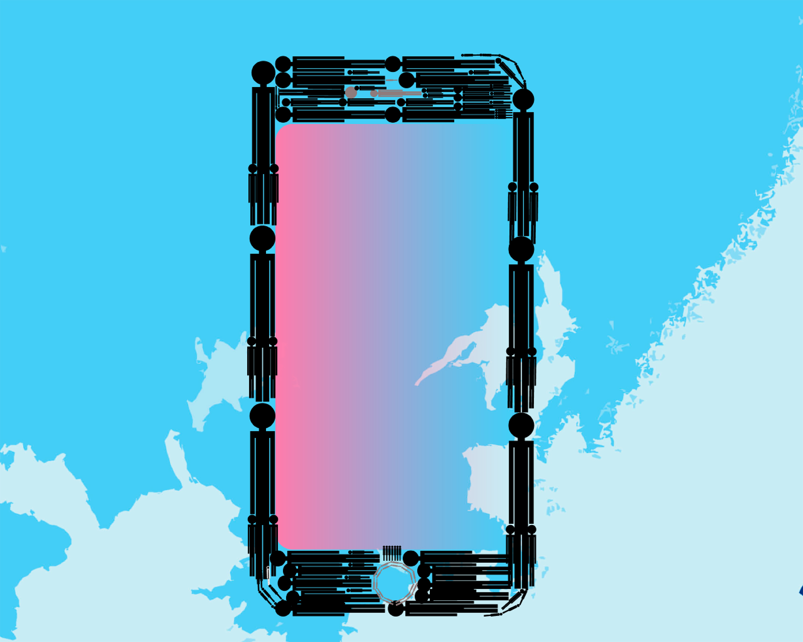

壱
いつの時代も人がいて成り立つ。
意図して切ることと、使っていないまたは使えないというのは大きく状況が異なる。たとえば、スマホゲームなどはしなくてはいけないわけなどではなく、むしろしないほうがいいのかもしれない。けれど習慣付いている上に娯楽、楽しんでいるというストレスの発散、至福のひと時にも繋がっているものを切断されることはむしろその状況を生み出すことで、よりストレスを与えるのではと考えた。そして、意図した状態でもこういった状態なのだから本当にそういったまったく使用できないという状態になった時私はどうなるのだろうと感じた。
違う視点で考えると同じ内容の文を20枚活版印刷などでするよりもパソコンで打ったもののほうが早くて楽に印刷できる。現代の当たり前は昔の当たり前をストレスに担っていたという記憶に残しているのかもしれない。いかに間欠的に作業を行うのかこれは一種のストレスの軽減なのではないかと考えられる。無駄を省きどれだけ伝えられるかということだ。活版印刷の大きく取り上げられた初めの方の話題としてルターの宗教改革による誰もが聖書を持てる時代を！！ということから始まっている。結局は思想などの情報を広げる方法は多くの人に見てもらうほかないのだ。

時代が変わり、スティーブ・ジョブズ、スティーブ・ウォズニアックらの行動は家庭もしくは1人にPC1台というのが当たり前な世界を作り上げ、iPoneという誰しもが考えなかった、今までにない画期的なものを作り上げた。彼らの前にもたくさんの人物の発見や発明によりインターンネット社会は成り立っている。そんな現代は手に持つことが容易な上使い方の簡単さは年々精度が上げられ、便利な一方で今までにない人間に対する大きな障害をもたらしている。今の子供達、今後の子供達は鉛筆を握ることよりもタブレットをもち勉強する時間のほうが増えるだろう。電話のマークも通じないこともあるのだから。生まれた時から何でもあっていうならばいつでもどこでもインターネットを使える、けれどいきなり接続を切られた際どうなってしまうのだろう。
弐
状況によって得られないものは使えない
先の東日本大震災では情報をうまく共有することが出来なくて、人々はの生活の中で不安の日々を送った。これは、テレビや携帯電話の復旧で常に情報が共有できていたのが携帯電話などの利器が使えなくなったことで身内の安否などが早く知ることができなかったからだ。つい2、30年前はそんなものもなく生活していたのに慣れとは恐ろしいものだ、使いすぎは良くない。バランスよくアナログ的なものとも付き合っていかないといざという時、人間はうまく行動してはいけないと考える。こう言って自然災害による影響でLINEなどのSNSが発達したわけだが、もっと違う視点でパソコンやスマートフォンと向き合うにはオフライン環境のことも視野に入れたほうがいいのではと考える。誰もが同じものをそして、もとめている情報をどんな状態でも見れることが重要だと思う。気づいたことの中に『スマホの中にデータが残っているものは見聞きすることができた。』ということを打ってあった、オフライン状態のスマホは某CMで言っている板フォンそのものだと考えついた、というよりもただの板だと思う。被災している人たちは今を知りたがっている、過去のことではなく自分の置かれている今を知りたいのだ。この世の中は便利だけれど一つが欠けると何もかもが崩れる。大阪で起きた地震でも、交通網がダメになって交通機関がとくに電車を利用している人々は大ダメージをうけた。
書き方は悪いが中途半端に使えるものが残ると使えないものと連携が取れず結果として正しく機能しないのだ。母の知り合いで大阪に在住している人は2駅くらい歩いた先で自転車を購入し、帰宅したと聞いた。電車はある、けれど動かない、動くのに時間がかかるという理由からだったそうだ。東日本も東京では同じような状況だったが、電車はあるのに動かないというのはそこからストレスと不安が増大すると思うのだ。そう考えると、緊急事態の時自分の持っているスマホが機能しない、オフラインになっているというのは規模としては違うが気持ち的な問題としては同じだと思う。情報交換も今だとLINEが多いと思う。特に日本で普及しているのはそれだろう。けれどいざという時LINEをしていない相手にも連絡を取りたい際はどうすればいいのか。LINEだってオフラインでは使えない。オフラインでも使える昔の駅にあった伝言板のようなものを作っていろんな人が書き込めるようにするというのがあったらいいのではと考えた。つくると個人情報やいたずらなど考え出したらきりがないが、これによって人々の中にわずかな心の落ち着きの場になるのではと考える。